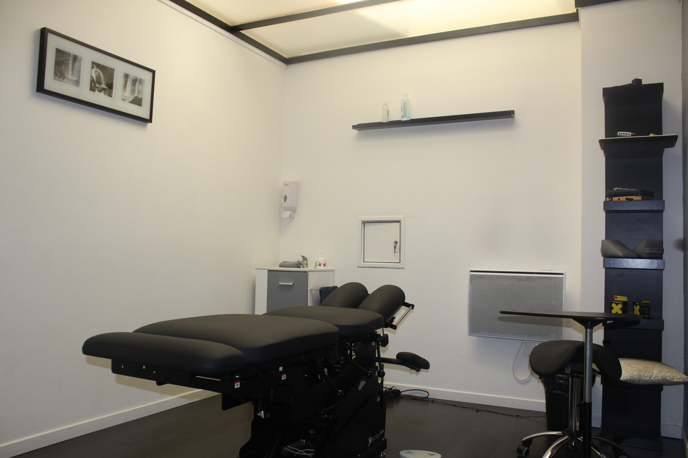
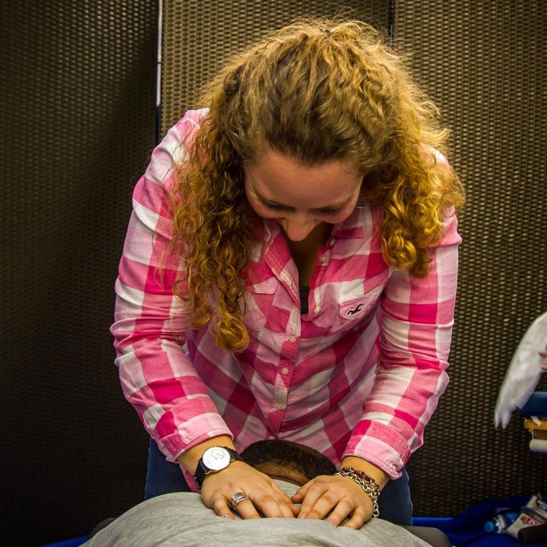

Les nourrissons
La naissance peut être traumatique pour les bébés, notamment ceux nés par césarienne, forceps ou ventouse.

Chiropracteur à Wasquehal · métropole lilloise
Soulager les douleurs du dos, du cou et des articulations, et accompagner toute la famille — des nourrissons aux sportifs — par des soins manuels adaptés à chacun.
Lundi – vendredi : 8h – 20h
Samedi : 10h – 15h
55 € la consultation
Espèces, chèque ou carte bancaire

La praticienne
Installée au 24 rue Faidherbe, Valentine reçoit les patients de Wasquehal, Marcq-en-Barœul, Croix, Roubaix et Lille pour des soins personnalisés, du nourrisson au senior.
La discipline
La chiropraxie est une profession de santé manuelle reconnue par l'OMS (Organisation Mondiale de la Santé). Elle a pour objectif de prévenir et de traiter les pathologies mécaniques de l'appareil neuro-musculo-squelettique : douleurs du dos et du cou, sciatiques, maux de tête, douleurs articulaires.
Le chiropracteur est en accès direct : aucune ordonnance n'est nécessaire. La chiropraxie peut aussi intervenir dans la prise en charge pluridisciplinaire des patients, en complément du suivi médical.
Pour qui, pour quoi ?
La naissance peut être traumatique pour les bébés, notamment ceux nés par césarienne, forceps ou ventouse.
La chiropraxie permet de traiter les douleurs liées à la grossesse et à l'accouchement, comme les douleurs du bas du dos.
Prévention des scolioses et des douleurs liées à la croissance.
Prévention, conseils de posture au travail et prise en charge des troubles liés au stress.
Prévention des douleurs et suivi dans la préparation des événements sportifs pour augmenter les performances.
Maintien de la mobilité des différentes articulations et du confort au quotidien.
Questions fréquentes
Non. La chiropraxie est une profession en accès direct : vous pouvez prendre rendez-vous sans prescription médicale, en ligne sur Doctolib ou par téléphone au 06 30 92 04 58.
La consultation est à 55 €, réglables en espèces, par chèque ou par carte bancaire.
Les séances ne sont pas prises en charge par l'Assurance Maladie, mais de nombreuses mutuelles proposent un forfait annuel pour la chiropraxie. Une facture vous est remise sur demande.
Oui. Valentine Vonck est formée à la prise en charge des femmes enceintes, des nourrissons et des enfants.
Le cabinet se situe au 24 rue Faidherbe, 59290 Wasquehal, à quelques minutes de Marcq-en-Barœul, Croix, Roubaix et Lille. Il est ouvert du lundi au vendredi de 8h à 20h et le samedi de 10h à 15h.
Sur le terrain
Venir au cabinet
À quelques minutes de Marcq-en-Barœul, Croix, Roubaix et Lille.